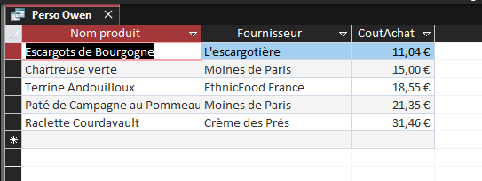
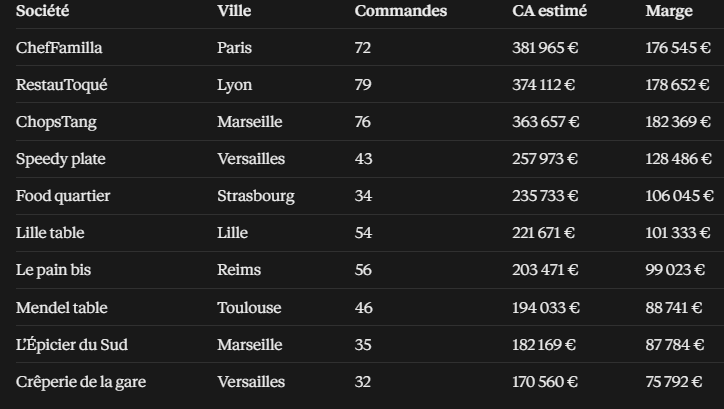
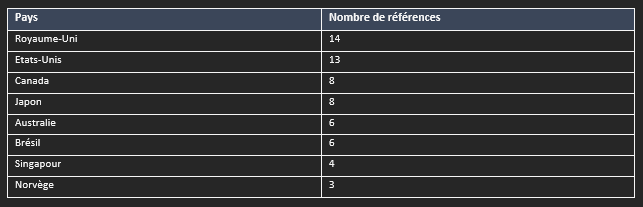
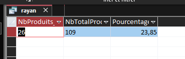

Mission 3 — Requête personnelle
Présentation
Chaque membre de l'équipe doit proposer une requête supplémentaire qui peut être utile à KDou. Voici une proposition sur les produits achetés auprès de fournisseurs français.
Les cinq produits de fournisseurs français les moins chers à l'achat
Question : Quels sont les cinq produits les moins chers achetés auprès de fournisseurs français ?
Objectif
Trouver les produits vendus par des fournisseurs situés en France et dont le coût d'achat est le plus faible.
Intérêt
Cette requête permet à KDou de repérer des produits achetés auprès de fournisseurs français à des prix intéressants. L'entreprise pourrait développer son offre de produits français tout en maîtrisant ses coûts. Cela pourrait aussi limiter certaines distances de transport.
Requête SQL Access
SELECT TOP 5
P.NomProd,
F.Societe AS Fournisseur,
P.CoutAchat
FROM
(
Produit AS P
INNER JOIN Fournisseur AS F
ON P.NoFour = F.NoFour
)
INNER JOIN Pays AS Pa
ON F.NoPays = Pa.NoPays
WHERE
Pa.PaysFR = "France"
ORDER BY
P.CoutAchat ASC,
P.NomProd ASC;
Explication
On relie les tables Produit, Fournisseur et Pays. Avec WHERE, on garde les fournisseurs situés en France. ORDER BY trie les produits du moins cher au plus cher, puis TOP 5 affiche les cinq premiers.
Résultat : noms des cinq produits, fournisseurs et coûts d'achat à renseigner après exécution dans Access.

Eros — Top 10 des clients par chiffre d’affaires estimé
Question : Quels sont les dix principaux clients de KDou selon leur chiffre d’affaires estimé, et quelle est la marge associée ?
Objectif
Classer les clients suivant leur chiffre d’affaires et afficher leur ville, leur nombre de commandes et leur marge.
Intérêt
Ce classement permet d’identifier les clients qui contribuent le plus au chiffre d’affaires et de comparer les marges associées.
Requête SQL
SELECT TOP 10
CL.Societe,
CL.Ville,
COUNT(DISTINCT CM.[N° commande]) AS NbCommandes,
ROUND(SUM(D.[Quantité] * P.CoutAchat * C.CoefMarge * (1 - D.[Remise (%)])), 2) AS ChiffreAffaires,
ROUND(SUM(D.[Quantité] * P.CoutAchat * C.CoefMarge * (1 - D.[Remise (%)]))
- SUM(D.[Quantité] * P.CoutAchat), 2) AS Marge
FROM (((Clientele AS CL
INNER JOIN Commande AS CM ON CL.CodeCli = CM.CodeCli)
INNER JOIN DetailCommande AS D ON CM.[N° commande] = D.[N° commande])
INNER JOIN Produit AS P ON D.[Réf produit] = P.RefProd)
INNER JOIN Categorie AS C ON P.CodeCateg = C.CodeCateg
GROUP BY CL.Societe, CL.Ville
ORDER BY SUM(D.[Quantité] * P.CoutAchat * C.CoefMarge * (1 - D.[Remise (%)])) DESC;
Explication
On relie les clients, commandes, détails, produits et catégories, puis on regroupe les montants par client et on trie les résultats.
Résultat : Top 10 des clients avec leur ville, leur nombre de commandes, leur chiffre d’affaires estimé et leur marge.

Raphaele — Pays fournisseurs hors Union européenne
Question : Quels pays hors Union européenne fournissent des produits à KDou, et combien de références viennent de chacun ?
Objectif
Lister les pays fournisseurs hors UE et compter le nombre de références par pays.
Intérêt
Ce classement aide KDou à voir quels pays concentrent ses approvisionnements hors UE et à mieux orienter ses échanges avec les fournisseurs.
Requête SQL
SELECT P.PaysFR AS Pays, COUNT(*) AS NbProduits
FROM (Produit AS Pr
INNER JOIN Fournisseur AS F ON Pr.NoFour = F.NoFour)
INNER JOIN Pays AS P ON F.NoPays = P.NoPays
WHERE P.UE = "Hors"
GROUP BY P.PaysFR
ORDER BY 2 DESC, 1;
Explication
On relie Produit, Fournisseur et Pays, on garde les pays hors UE, puis COUNT et GROUP BY comptent les produits par pays.
Résultat : 62 références sur 109 proviennent de pays hors UE (56,9 %). Le Royaume-Uni arrive en tête avec 14 références, suivi des États-Unis avec 13.

Rayane — Part des produits en carton ou en verre
Question : Quelle part des références du catalogue mentionne un conditionnement en carton ou en verre ?
Objectif
Compter les produits concernés et calculer leur pourcentage parmi toutes les références.
Intérêt
Cet indicateur offre un premier aperçu des emballages mentionnés dans le catalogue pour orienter une étude plus précise des matériaux utilisés.
Requête SQL
SELECT
DCount("*","Produit",
"QteParUnit Like '*carton*' OR QteParUnit Like '*verre*'")
AS NbProduits_Carton_Verre,
DCount("*","Produit") AS NbTotalProduits,
Round(100 * DCount("*","Produit",
"QteParUnit Like '*carton*' OR QteParUnit Like '*verre*'")
/ DCount("*","Produit"), 2) AS Pourcentage;
Explication
DCount compte les produits correspondants et le nombre total de références ; Round arrondit le pourcentage calculé.
Résultat : 26 produits sur 109, soit 23,85 % des références. Cette mesure repose sur les descriptions et non sur l’impact réel des emballages.
